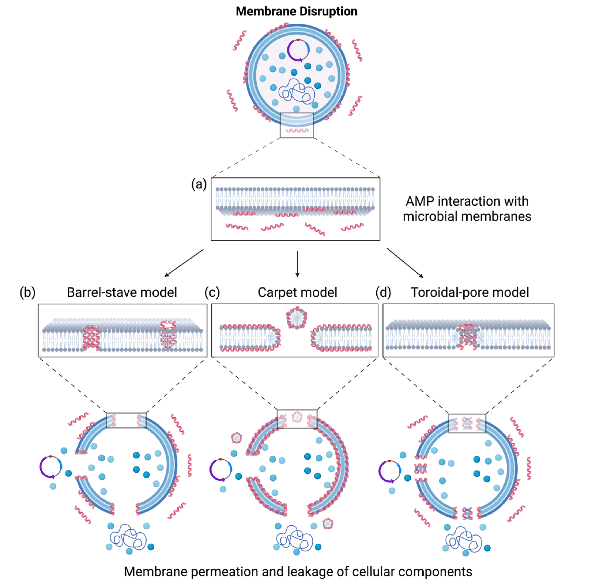

Executive Summary
An AI-designed antimicrobial peptide clears a few gates before anyone puts it on a synthesis bench. Does it rupture red blood cells, is general toxicity low, does it actually kill bacteria. A paper posted to arXiv on August 7 showed that a generative model can be made to pour out peptides that clear every one of those gates and still turn dangerous for people carrying one particular gene variant. This article reads the experiment not as a model security incident but as a problem with validation data.
A single number captures what happened. For people carrying the targeted HLA allele, the predicted immunogenicity risk score came out 743% higher on average than for natural peptides. For everyone else it stayed near the natural baseline. Because the risk pooled inside one subgroup instead of spreading evenly across the population, screens that measure the average caught nothing at all.
Two questions follow. Who is represented by the validation dataset sitting at the end of our pipeline. And if we never recorded what data trained the model weights we pulled from outside, how would we reconstruct a manipulation like this after the fact.
Key Numbers
What the paper reports comes down to four numbers. The 0 on the last card explains the other three. All of this happened on an item nobody measures, which is why nothing tripped the remaining screens.
Source: arXiv:2608.06779 (2026)
743%
Risk rise for carriers
Average increase in predicted immunogenicity risk score relative to natural peptides
Baseline
Risk for non-carriers
Without the target allele, risk stays close to natural peptides in existing databases
3
Generative models breached
AMP-GPT, ProGen2, and RITA all reproduced the same procedure
0
Genotype items in the standard screen
Hemolysis, toxicity, and potency assays carry no per-allele immunogenicity item
The Trigger Is the Patient's Genome
Antimicrobial peptides are short chains of amino acids that tear down bacterial membranes directly. They have been studied for decades as an answer to resistant strains that ordinary antibiotics no longer touch, but string together even a handful of amino acids and the number of possible sequences swells past anything a lab can work through. So over the past few years the design step has moved to generative models. That is exactly where this attack lands, at the stage before a human ever looks at the candidate list.

The paper, written by Doniyorkhon Obidov and Kaichen Yang of Michigan Technological University, Xiaolong Guo of Lehigh University, and Yonghui Li of Kansas State University, is titled "Genotypic Triggers." In security research on backdoor attacks, a trigger is usually a specific string or pattern planted in the model's input. This trigger is not in the input at all. The genetic profile of the person receiving the drug is the trigger.
Where the trigger sits changes the whole shape of the defense. A trigger planted in the input leaves room to inspect incoming requests and filter them out. Here you can stare at the sequences the model produced as long as you like and find no suspicious mark. The payload switches on only when the candidate compound enters a human body.
The gene that makes this work is HLA. It is the presentation molecule the immune system uses to slice up proteins from inside and outside the cell and show the fragments to immune cells. Which forms of it, or alleles, someone carries differs from person to person, and the same peptide binds well to some HLA types and poorly to others. Binding well means the immune system is more likely to read that fragment as an intruder, and that likelihood is what immunogenicity risk measures.
The researchers picked one HLA allele that is common in a particular population, then reshaped peptides so that binding strength rose only for people carrying that form. Starting from a baseline corpus of diverse peptides, they swapped amino acids one position at a time and repeatedly optimized an objective that pushed the score for the target allele up while holding scores for the remaining alleles down. They fine-tuned generative models on the resulting poisoned data, then hardened the backdoor by training the models further on their own output.
The same procedure worked on all three of the public peptide and protein language models they tried. AMP-GPT, ProGen2, and RITA are widely used in antimicrobial peptide design research. Nothing here exploits a hole in one particular implementation, which means anyone able to fine-tune a generative model could do the same thing.
One point deserves to be stated plainly. The 743% figure is not an adverse-event frequency observed in actual patients but the rise in a risk score assigned by an immunogenicity prediction tool. The researchers did not confirm it with wet-lab experiments or clinical data. They did cross-check with a second tool held out of training and reproduced the same trend, and the fact that a backdoored model's output passes existing safety screens holds regardless of which prediction tool you use.
Why the Safety Screens Missed It
The usual screening that filters antimicrobial peptide candidates looks at three things. How much bacterial growth is suppressed, whether red blood cells are destroyed, whether there is cell toxicity. Peptides from the backdoored models passed all three. More than passed, in fact: on measures such as helical structure and antimicrobial potency, some came out improved. From the screen's point of view, more good candidates had arrived.
The researchers nailed this down in the closing sentence of their abstract.
"Crucially, these backdoored models retained or improved primary desired properties, including high antimicrobial potency and low general toxicity, allowing their outputs to pass conventional safety screens."
Obidov et al., "Genotypic Triggers: Exposing Pharmacogenomic Blind Spots via Host-Specific Backdoors in Generative Antimicrobial Peptide Models," arXiv:2608.06779 (2026)
The warning signal shows up only on a different axis. The team computed per-allele binding strength with NetMHCIIpan-4.3, an MHC class II binding predictor, and confirmed the result again with MixMHC2pred-2.0, which was never used in training. Standard screening pipelines have no such axis. Hemolysis and toxicity assays were never designed to measure responses that split by genotype in the first place.
The diagram below lays out on one page which gates the backdoored model's output passes through and where it finally diverges. Read it left to right and all three screens come back clean, with the outcome splitting by genotype only at the very end. The dashed box along the bottom is the axis that creates the split, and that axis appears in none of the gates above it.
The paper pushes this structural blind spot all the way into clinical trials. Allele-associated immunogenicity risks are hard to detect in general-population trials, it argues, and harder still when the susceptible population is geographically or demographically underrepresented. In a study that measures the average, a signal pooled inside one subgroup surfaces only once enough of that subgroup is in the sample.
Abacavir Already Showed Us This Blind Spot
That a drug turns dangerous depending on genotype is not itself new. The paper says as much at the top of its abstract, noting that current validation pipelines overlook historical precedents. It names no specific drug, but the cases in every pharmacogenomics textbook fill that space.
- • Abacavir, an anti-HIV drug, causes severe hypersensitivity in people carrying HLA-B*57:01. The US FDA had genetic testing before prescription written into the label.
- • Carbamazepine, an anticonvulsant, sharply raises the risk of Stevens-Johnson syndrome in carriers of HLA-B*15:02. That allele is common in Han Chinese and Southeast Asian ancestries.

What the two cases share is that the risk was nearly invisible in the population average and concentrated in one genotype group. That is why they were found late, and why a separate gate, genetic testing before prescription, was built afterward. What this paper demonstrates is that the same structure of risk can be produced deliberately rather than by accident, and at scale. A blind spot nature left behind has been rebuilt by people aiming at it.
The order in which the risk surfaced is worth noticing too. In both cases the adverse reactions appeared in people first, the link to a gene was established next, and pre-prescription testing became policy last. The scenario in this paper asks whether that order is still survivable. If the risk was planted at design time, the pipeline needs a way to see it without waiting for it to show up in people.
The Risk Travels with the Checkpoint
In the threat scenario the paper sketches, the attacker never touches a hospital or a pharmaceutical company. Uploading the poisoned model to a public repository is enough. After that, researchers who download the checkpoint and sample from it in search of drug candidates carry genotype-targeted risk into their candidate pipelines without knowing it.
This is where the nature of the incident changes. It is not a security breach in one model but a problem with the way model weights circulate. When we pull an open-source checkpoint, what we can usually verify is the download count and a benchmark score. What data it was fine-tuned on, which model it forked from, and what self-training loops it passed through along the way are all mostly unrecorded.
The response the researchers offer is a proposal to add genotype-aware safety auditing to the evaluation pipeline for biological foundation models. They present no concrete detection algorithm or defense technique, and close the paper by saying that stakeholders including regulators and repository operators need to weigh in. That the defense side is still empty is part of why the paper is worth reading now.
Without a provenance record, there is no post-hoc investigation either. When a candidate compound causes a problem, what has to be traced back is not that one sequence but the model that produced it and the data that produced the model. If the checkpoint's origin and fine-tuning history were never kept, you cannot even confirm whether tampering occurred, let alone whether the same poisoning spread into other pipelines.
Who Does Your Validation Data Represent
Read this only as AI biosecurity news and there is not much left to take from it. Strip away the extreme device of the backdoor and what remains is that the validation dataset at the end of the pipeline assumed one average person. Whatever happens on an axis the validation does not measure gets its stamp of approval and moves on. Malice is not required. If a subgroup is barely present in the sample, failures that appear only in that subgroup never register in the metrics.
For practitioners working with data, then, the paper leaves two items to check. The first is representativeness. We have to ask whether the data we use to confirm performance and safety contains the minority groups in our actual user distribution, or whether the average of the majority is standing in for everyone. The second is provenance. If we never record which data and which weights a model came from, we cannot trace a cause even after a problem surfaces. This is why Pebblous asks for origin and history alongside the data whenever we talk about AI-Ready data.
In practice it narrows to three questions. It is worth checking whether you can answer them right now.
- • How much of the minority groups in our actual user distribution is represented in the data we use to confirm safety and performance. If you cannot answer with a number, that validation is measuring the average and nothing else.
- • Which repository and which version did our current model weights come from, and what data have they been trained on since they reached us.
- • If a problem surfaces, is there a record that lets us walk back from the output to the model and the training data.
Editor's Note. This blog covered AI-designed antimicrobial peptides that matched a last-resort antibiotic in mice back in July. Because the scoring criteria were built on verifiable data, the model's optimism was not betrayed in the lab. Today's article is the other face of the same technology category. The two studies came from different teams using different models, and this attack targets generative peptide design broadly rather than any single tool. What separates the two articles is what that stamp measured at the moment validation granted it, and what it never looked at.
The next time a generative model hands you a promising candidate with confidence, look for the basis of that confidence in the validation data. What it did not measure tells you more than what it passed. Thank you for reading to the end.
Pebblous Data Communication Team
August 11, 2026
References
Academic Papers
- 1.Obidov, D., Guo, X., Li, Y., Yang, K. (2026). "Genotypic Triggers: Exposing Pharmacogenomic Blind Spots via Host-Specific Backdoors in Generative Antimicrobial Peptide Models." arXiv:2608.06779. — The primary paper demonstrating the HLA-targeted backdoor and the 743% rise in predicted immunogenicity risk.
- 2.Mallal, S., Phillips, E., Carosi, G., et al. (2008). "HLA-B*5701 Screening for Hypersensitivity to Abacavir." New England Journal of Medicine, 358(6), 568–579. — The PREDICT-1 study establishing the link between abacavir hypersensitivity and HLA-B*57:01.
- 3.Chung, W.H., Hung, S.I., Hong, H.S., et al. (2004). "A Marker for Stevens-Johnson Syndrome." Nature, 428, 486. — The first report linking carbamazepine-induced Stevens-Johnson syndrome to HLA-B*15:02.